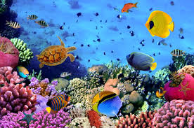

Marine Species Identification Using CNNs
How to use Software
- To download software refer to documentation.
- Developers will be directed to the guide to use YOLO (You only look once algorithm).The source code is present at the bottom.
Objective - The use of this softare is to expand the use of fish detection underwater. Developers will use this alogrithm to implement it to a 4k video in real time.
- Clients who are people that are using the software can report bugs i.e the algorithm does not identify the correct fish.
Developers
End Users
